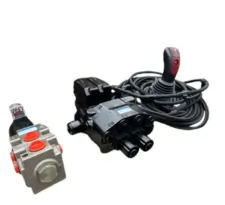

HYDRAULIC VALVES & MONOBLOCKS

PROPORTIONAL AND ON/OFF CONTROLLERS, JOYSTICKS

RADIO REMOTE WITH PROPORTIONAL VALVE PLUG AND PLAY SET

RADIO REMOTE TO AN EXISTING VALVE

RADIO REMOTE WITH ACTUATOR TO OPERATE MANUAL DISTRIBUTORS

PROPORTIONAL SECTIONAL VALVES

RADIO REMOTE WITH EXTRA JOYSTICKS TO CONTROL FROM CABINE

RADIO REMOTE WITH EXTRA JOYSTICKS & PROPORTIONAL VALVES

SPARE PARTS FOR SCANRECO

MONOBLOCK FOR TRACTOR LOADER

ON-OFF MONOBLOCK VALVES WITH RADIO REMOTE

PROPORTIONAL OR ON-OFF JOYSTICK WITH MONOBLOCK OR SECTIONAL VALVE